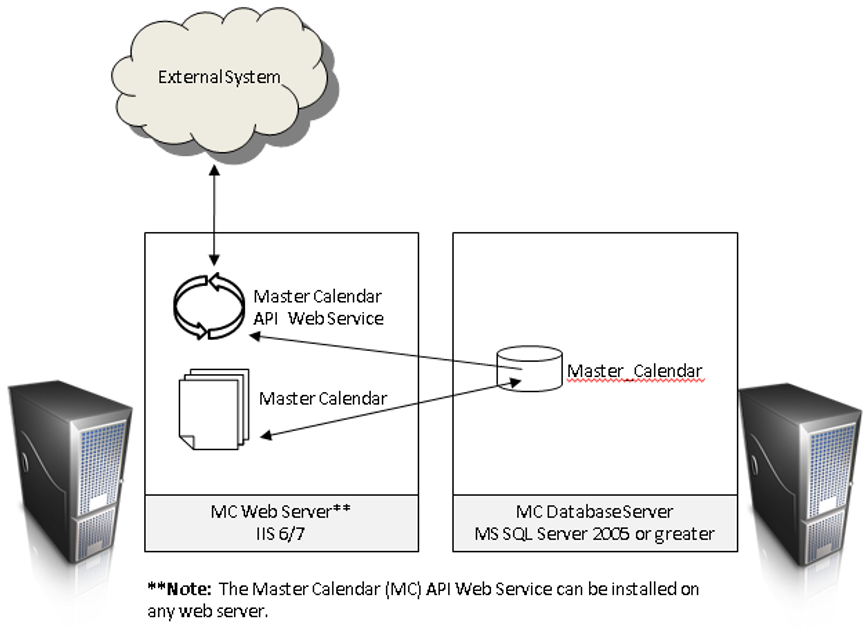

This guide is intended for programmers that need detailed information about our web service based API. Use of this guide assumes you are familiar with the following:

Note: If an offsite external third party integrator (i.e. outside of your network) requires access to the Master Calendar API, the Master Calendar API Web Service will need to be installed as a public facing website.
Process Overview:
Once you meet the prerequisites, to install EMS Master Calender API, you will: